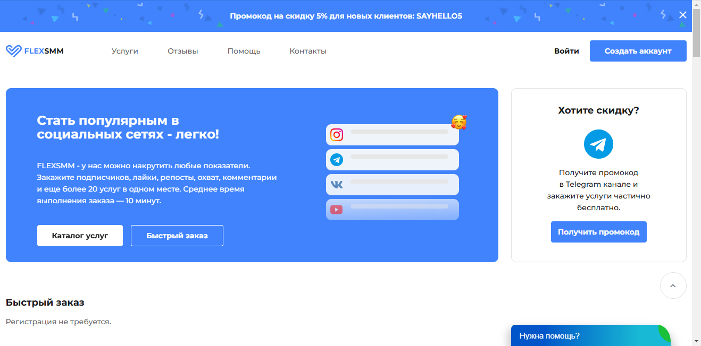
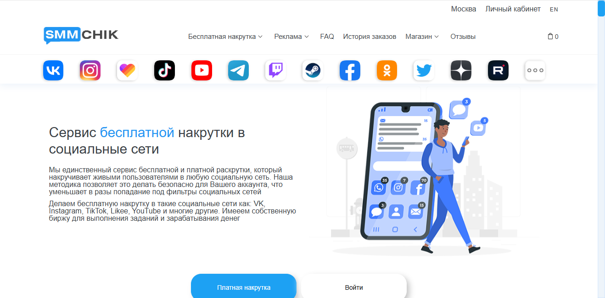

Наша редакция провела аналитическое исследование и составила рейтинг лучших сервисов по накрутке живых подписчиков в 2025 году, которые хорошо себя показали по отзывам и оценкам клиентов за прошедшее время. Эти сервисы гарантируют безопасную накрутку подписчиков и лайков, что позволяет привлекать реальных пользователей, активно взаимодействующих с вашим контентом в Вконтакте. В нашем обзоре представлены платформы, которые обеспечивают качественные услуги по продвижению аккаунтов и помогут вам увеличить вовлеченность вашей аудитории. Используя проверенные сервисы, вы сможете заказать накрутку лайков и подписчиков, а также повысить популярность вашего профиля без рисков блокировки аккаунта.
SMM Prime
Официальный сайт: https://smmprime.com
Рейтинг сервиса: 4.8
Стоимость накрутки живых подписчиков: от 0,05 руб. до 1,50 руб.
Пробный период: есть
Что ещё можно накручивать (кроме живых подписчиков):
- лайки
- просмотры
- репосты
- комментарии
- активность в сообществах
- подписки на каналы
- голоса в опросах
Описание сервиса:
SMM Prime — это популярный сервис, который предоставляет услуги накрутки лайков, подписчиков и активности в социальных сетях. Сервис предлагает высококачественные способы продвижения аккаунтов, включая накрутку живых пользователей, что особенно удобно для предпринимателей и блогеров, стремящихся привлечь аудиторию и увеличить вовлеченность.
Краткая инструкция по шагам по накрутке в этом сервисе:
- Зарегистрируйтесь на сайте SMM Prime.
- Пополните баланс через удобный способ оплаты.
- Выберите услугу, например, накрутку подписчиков Вконтакте.
- Укажите ссылку на страницу или сообщество, для которого нужна накрутка.
- Настройте параметры заказа и выберите количество подписчиков.
- Нажмите «Заказать» и следите за выполнением в личном кабинете.
Особенности и преимущества:
- Быстрая и качественная накрутка подписчиков и лайков.
- Широкий выбор дополнительных услуг для продвижения аккаунтов.
- Гарантия сохранности аккаунтов пользователей от блокировок.
- Доступные цены, которые подходят как для начинающих, так и для профессионалов.
- Понятный и простой интерфейс для всех пользователей.
Недостатки:
- Некоторые пользователи отмечают нестабильность в доставке в период высокой нагрузки.
Martinismm
Официальный сайт: https://martinismm.com
Рейтинг сервиса: 4.9
Стоимость накрутки живых подписчиков: от 0,05 руб. до 1,50 руб.
Пробный период: есть
Что ещё можно накручивать (кроме живых подписчиков):
- лайки
- просмотры
- репосты
- комментарии
- друзья
- фолловеры
- голоса в опросах
Описание сервиса:
Martinismm — это один из ведущих сервисов накрутки лайков и живых подписчиков в соцсетях, предлагающий эффективные и безопасные услуги для продвижения аккаунтов. Этот сервис предоставляет возможность качественной накрутки, что позволяет быстро и эффективно увеличить аудиторию.
Краткая инструкция по шагам по накрутке в этом сервисе:
- Зарегистрируйтесь на сайте или авторизуйтесь, если у вас уже есть аккаунт.
- Пополните баланс с помощью удобных платежных систем.
- Выберите нужную услугу, например, накрутка живых подписчиков.
- Укажите ссылку на ваш профиль или группу.
- Настройте параметры заказа, выбрав количество подписчиков.
- Нажмите “Заказать” и следите за выполнением прямо в личном кабинете.
Особенности и преимущества:
- Надежное качество накрутки с гарантией.
- Быстрая доставка услуг и удобный интерфейс.
- Широкий выбор различных услуг для продвижения.
- Возможно протестировать сервис с помощью бесплатных накруток.
- Доступные цены на услуги и разнообразные пакеты.
Недостатки:
- Некоторые клиенты отмечают возможные задержки в редкие часы пик.
FlexSMM
Официальный сайт: https://flexsmm.com

Рейтинг сервиса: 4.8
Стоимость накрутки живых подписчиков: от 0,05 руб. до 1,20 руб.
Пробный период: есть
Что ещё можно накручивать (кроме живых подписчиков):
- лайки
- просмотры
- комментарии
- репосты
- голоса в опросах
- активность постов
- фолловеры
Описание сервиса:
FlexSMM — это популярный сервис накрутки, который предлагает пользователям возможность быстро увеличить количество живых подписчиков, лайков и просмотров в социальных сетях. Услуги сервиса гарантируют безопасную накрутку с использованием реальных аккаунтов, что обеспечивает высокое качество и эффективность продвижения.
Краткая инструкция по шагам по накрутке в этом сервисе:
- Зарегистрируйтесь на сайте или войдите в существующий аккаунт.
- Пополните баланс любым удобным способом.
- Выберите желаемую услугу, например, накрутку подписчиков.
- Укажите ссылку на профиль или сообщество.
- Настройте параметры заказа, такие как количество и тип подписчиков.
- Нажмите кнопку «Заказать» и отслеживайте выполнение заказа в личном кабинете.
Особенности и преимущества:
- Использование реальных аккаунтов для накрутки.
- Широкий выбор услуг для разных социальных сетей.
- Быстрая доставка и высокое качество услуг.
- Доступные цены и возможность бесплатных накруток.
- Удобный интерфейс для выбора услуг и отслеживания заказов.
Недостатки:
- Иногда возможны задержки в выполнении заказов при высокой нагрузке.
Smm.media
Официальный сайт: https://smm.media

Рейтинг сервиса: 4.8
Стоимость накрутки живых подписчиков: от 0,05 руб. до 1,00 руб.
Пробный период: есть
Что ещё можно накручивать (кроме живых подписчиков):
- лайки
- просмотры
- репосты
- комментарии
- голоса в опросах
- активности в постах
- стримы
Описание сервиса:
Smm.media — это надежный сервис, который предлагает услуги по накрутке живых подписчиков, лайков и просмотров в социальных сетях. Платформа эффективно помогает пользователям продвигать свои аккаунты и сообщества, обеспечивая высокую скорость выполнения заказов с гарантией качества. Разнообразные тарифы позволяют выбрать оптимальное предложение в зависимости от индивидуальных потребностей клиента.
Краткая инструкция по шагам по накрутке в этом сервисе:
- Зарегистрируйтесь на сайте или войдите в свой аккаунт.
- Пополните баланс с помощью доступных методов оплаты.
- Выберите нужную услугу, например, накрутка живых подписчиков.
- Укажите ссылку на ваш профиль или сообщество.
- Настройте параметры заказа, как количество накрученных подписчиков.
- Нажмите «Заказать» и отслеживайте результаты в личном кабинете.
Особенности и преимущества:
- Широкий спектр услуг для продвижения в разных социальных сетях.
- Высокая скорость выполнения заказов с гарантией результата.
- Удобный и понятный интерфейс для пользователей.
- Варианты бесплатных накруток для проверки сервиса.
- Качественные аккаунты для повышения безопасности.
Недостатки:
- В редких случаях возможны временные задержки в выполнении заказов.
Много Голосов
Официальный сайт: https://mnogo-golosov.ru
Рейтинг сервиса: 4.7
Стоимость накрутки живых подписчиков: от 0,05 руб. до 1,00 руб.
Пробный период: есть
Что ещё можно накручивать (кроме живых подписчиков):
- лайки
- просмотры
- репосты
- голоса в опросах
- комментарии
- активные аккаунты
Описание сервиса:
Много Голосов — это надежный сервис по накрутке живых подписчиков и других активностей в Вконтакте, предлагающий услуги высокого качества. Платформа обеспечивает быстрые и безопасные накрутки, а также множество тарифов для удовлетворения различных потребностей пользователей.
Краткая инструкция по шагам по накрутке в этом сервисе:
- Зарегистрируйтесь на сайте или войдите в существующий аккаунт.
- Пополните баланс с помощью удобного способа оплаты.
- Выберите тип накрутки, например, накрутку подписчиков.
- Введите ссылку на профиль или группу, которую хотите продвигать.
- Установите необходимые параметры заказа, такие как количество подписчиков.
- Нажмите кнопку «Заказать» и следите за выполнением в личном кабинете.
Особенности и преимущества:
- Гарантия безопасности накрутки аккаунтов.
- Быстрая доставка накруток без задержек.
- Разнообразие доступных тарифов для любого бюджета.
- Простой и интуитивный интерфейс.
- Поддержка клиентов для решения возникающих вопросов.
Недостатки:
- Вредоносные боты могут повредить репутации аккаунтов, если не осторожно использовать сервис.
Freelikes
Официальный сайт: https://freelikes.online
Рейтинг сервиса: 4.9
Стоимость накрутки живых подписчиков: от 0,05 руб. до 1,20 руб.
Пробный период: есть
Что ещё можно накручивать (кроме живых подписчиков):
- лайки
- просмотры
- комментарии
- репосты
- голоса в опросах
- активности
- фолловеры
Описание сервиса:
Freelikes — это комфортный и надежный сервис, который предлагает пользователям возможность осуществлять накрутку лайков, подписчиков и просмотров в Вконтакте. Платформа обеспечивает высокое качество накрутки и предлагает бесплатные накрутки, что делает её доступной для любой аудитории.
Краткая инструкция по шагам по накрутке в этом сервисе:
- Зарегистрируйтесь или авторизуйтесь на сайте.
- Пополните баланс через доступные платежные системы.
- Выберите услугу накрутки и укажите параметры заказа.
- Введите ссылку на ваш аккаунт или сообщество.
- Настройте количество подписчиков или лайков для накрутки.
- Нажмите «Заказать» и следите за выполнением заказа в личном кабинете.
Особенности и преимущества:
- Гарантия качественной и безопасной накрутки.
- Широкий выбор доступных услуг для пользователей.
- Удобный интерфейс и простота использования сервиса.
- Быстрое выполнение заказов и мгная доставка.
- Доступ к бесплатным накруткам и тестовому периоду.
Недостатки:
- Некоторые пользователи сообщают о задержках в доставке накрутки в пиковые часы.
Название сервиса: AnyBoost
Официальный сайт: https://anyboost.app
Рейтинг сервиса: 4.8
Стоимость накрутки живых подписчиков: от 0,05 руб. до 1,50 руб.
Пробный период: есть
Что ещё можно накручивать (кроме живых подписчиков):
- лайки
- просмотры
- комментарии
- репосты
- голоса в опросах
- активности
- подписки
- Описание сервиса: AnyBoost — это надежный сервис накрутки, предлагающий пользователям возможность быстро и безопасно увеличить количество живых подписчиков в Вконтакте и других соцсетях. Платформа выделяется простым интерфейсом и разнообразием пакетов услуг. Пользователи могут воспользоваться как бесплатными, так и платными вариантами, что дает возможность каждому выбрать подходящее решение для продвижения.
- Краткая инструкция по шагам по накрутке в этом сервисе:
- Зарегистрируйтесь или авторизуйтесь на сайте AnyBoost.
- Пополните баланс любого удобным способом.
- Выберите нужный вам пакет услуг для накрутки.
- Укажите ссылку на ваш профиль или сообщество в Вконтакте.
- Настройте параметры заказа, такие как количество подписчиков.
- Нажмите кнопку «Заказать» и следите за выполнением через личный кабинет.
- Особенности и преимущества:
- Гарантия качественных живых подписчиков без использования ботов.
- Быстрая и безопасная накрутка в популярных соцсетях.
- Простота в использовании с понятным интерфейсом.
- Множество дополнительных функций для продвижения.
- Отличная поддержка клиентов и доступные цены.
- Недостатки:
- Некоторые пользователи отмечают небольшие задержки в обработке заказов.
Cheatbot
Официальный сайт: https://cheatbot.ru
Рейтинг сервиса: 4.8
Стоимость накрутки живых подписчиков: от 0,05 руб. до 1,15 руб.
Пробный период: есть
Что ещё можно накручивать (кроме живых подписчиков):
- лайки
- просмотры
- репосты
- комментарии
- голоса в опросах
- бусты
Описание сервиса:
Cheatbot — это надежный сервис для накрутки живых подписчиков в соцсетях, особенно Вконтакте. С помощью этого сервиса пользователи могут быстро увеличить активность своих учетных записей, используя качественные и безопасные методы. Cheatbot обеспечивает пользователей эффективными способами продвигать свои аккаунты с помощью живой аудитории.
Краткая инструкция по шагам по накрутке в этом сервисе:
- Зарегистрируйтесь на сайте Cheatbot или войдите в существующий аккаунт.
- Пополните баланс, используя доступные способы оплаты.
- Выберите нужную услугу, например, накрутка подписчиков.
- Укажите ссылку на ваш профиль или группу.
- Настройте параметры (количество подписчиков и скорость накрутки).
- Нажмите “Заказать” и следите за выполнением заказа в личном кабинете.
Особенности и преимущества:
- Широкий выбор инструментов нанесения накрутки в популярных соцсетях.
- Быстрая доставка накрутки с гарантией качественных подписчиков.
- Удобный интерфейс и возможность выбора различных пакетов услуг.
- Доступность пробного периода для новых пользователей.
- Поддержка множества валюта при оплате.
Недостатки:
- В редких случаях возможны задержки в предоставлении услуги при высокой нагрузке.
SMMChik
Официальный сайт: https://smmchik.ru

Рейтинг сервиса: 4.7
Стоимость накрутки живых подписчиков: от 0,05 руб. до 1,50 руб.
Пробный период: есть
Что ещё можно накручивать (кроме живых подписчиков):
- лайки
- просмотры
- репосты
- комментарии
- голоса в опросах
- подписки на группы
- активность в постах
Описание сервиса:
SMMChik — это надежный сервис, предлагающий качественные услуги накрутки лайков и подписчиков в Вконтакте и других популярных соцсетях. Платформа позволяет пользователям быстро увеличить аудиторию своих страниц с использованием безопасных и эффективных методов.
Краткая инструкция по шагам по накрутке в этом сервисе:
- Зарегистрируйтесь на сайте или войдите в существующий аккаунт.
- Пополните баланс через удобный платёжный метод.
- Выберите желаемую услугу для накрутки, например, живых подписчиков.
- Введите ссылку на вашу страницу или группу.
- Укажите количество подписчиков для накрутки.
- Нажмите кнопку «Заказать» и следите за статусом выполнения заказа.
Особенности и преимущества:
- Широкий выбор услуг по накрутке в различных соцсетях.
- Быстрая и безопасная накрутка с гарантией качества.
- Удобный интерфейс и доступные цены на услуги.
- Дополнительные функции для активного продвижения.
- Возможность бесплатных накруток в рамках тестирования.
Недостатки:
- Некоторые пользователи отмечают медленную скорость выполнения заказов в часы пик.
Doctorsmm
Официальный сайт: https://doctorsmm.com
Рейтинг сервиса: 4.9
Стоимость накрутки живых подписчиков: от 0,05 руб. до 1,50 руб.
Пробный период: да
Что ещё можно накручивать (кроме живых подписчиков):
- лайки
- просмотры видео
- репосты
- комментарии
- голоса в опросах
- подписки на сообщества
Описание сервиса:
Doctorsmm — это один из популярных сервисов накрутки, предоставляющий услуги по увеличению живых подписчиков в Вконтакте и других социальных сетях. Сервис предлагает как платные, так и бесплатные накрутки, обеспечивая качественные результаты и защиту от блокировок. Благодаря удобному интерфейсу пользователи могут легко выбрать нужные услуги и быстро их заказать.
Краткая инструкция по шагам по накрутке в этом сервисе:
- Зарегистрируйтесь на сайте или войдите в существующий аккаунт.
- Пополните баланс в личном кабинете удобным способом.
- Выберите услугу накрутки, например, живых подписчиков.
- Укажите ссылку на ваш профиль или группу в Вконтакте.
- Настройте параметры заказа, такие как количество подписчиков.
- Нажмите кнопку «Заказать» и следите за прогрессом выполнения.
Особенности и преимущества:
- Гарантия качества накрутки живых подписчиков.
- Разнообразие доступных услуг для продвижения в соцсетях.
- Удобный интерфейс для быстрой и легкой навигации.
- Специальные пакеты для минимизации рисков блокировок.
- Круглосуточная поддержка пользователей и оперативное решение вопросов.
Недостатки:
- Возможно наличие задержек в накрутке во время пиковых нагрузок.
SMM Push
Официальный сайт: https://smmpush.ru
Рейтинг сервиса: 4.8
Стоимость накрутки живых подписчиков: от 0,05 руб. до 1,50 руб.
Пробный период: есть
Что ещё можно накручивать (кроме живых подписчиков):
- лайки
- просмотры
- репосты
- комментарии
- градусы звездности
- активности
Описание сервиса:
SMM Push — это надежный сервис, который предоставляет качественные услуги накрутки живых подписчиков и лайков в Вконтакте, а также в других популярных соцсетях. Платформа предлагает удобный интерфейс и обеспечивает высокий уровень безопасности для аккаунтов.
Краткая инструкция по шагам по накрутке в этом сервисе:
- Зарегистрируйтесь на сайте SMM Push.
- Пополните свой баланс удобным способом.
- Выберите нужную услугу, например, накрутка подписчиков.
- Укажите ссылку на ваш аккаунт или группу в Вконтакте.
- Настройте количество подписчиков по вашему желанию.
- Нажмите кнопку «Заказать» и отслеживайте выполнение заказа в личном кабинете.
Особенности и преимущества:
- Высокое качество накрутки с гарантией живых пользователей.
- Быстрая обработка заказов и простота в использовании.
- Разнообразие услуг для эффективного продвижения аккаунтов.
- Доступные цены и возможность тестирования сервиса.
- Надежная безопасность аккаунтов без риск блокировок.
Недостатки:
- Некоторые пользователи отмечают периодические задержки в исполнении заказов.
Название сервиса: SMMRoot
Официальный сайт: https://smmroot.com
Рейтинг сервиса: 4.8
Стоимость накрутки живых подписчиков: от 0,05 руб. до 1,00 руб.
Пробный период: есть
Что ещё можно накручивать (кроме живых подписчиков):
- лайки
- просмотры
- репосты
- комментарии
- подписки на новости
- активности в постах
- аккаунты
- Описание сервиса: SMMRoot – это сервис, предоставляющий услуги по накрутке живых подписчиков в Вконтакте и других популярных соцсетях. Платформа предлагает как бесплатные, так и платные накрутки, обеспечивая качественное продвижение и быструю реализацию заказов.
- Краткая инструкция по шагам по накрутке в этом сервисе:
- Зарегистрируйтесь на сайте или войдите в уже существующий аккаунт.
- Пополните баланс удобным способом.
- Выберите необходимую услугу, например, накрутка лайков или просмотров.
- Укажите ссылку на ваш профиль или страницу.
- Настройте параметры заказа.
- Нажмите на кнопку «Заказать» и наблюдайте за выполнением в личном кабинете.
- Особенности и преимущества:
- Широкий спектр услуг для эффективного продвижения.
- Гарантированное качество накрутки живых подписчиков.
- Быстрая и безопасная реализация заказов.
- Доступность тестовых периодов и бесплатных накруток.
- Простота интерфейса и разнообразие тарифов.
- Недостатки:
- Некоторые пользователи сообщают о высоких ценах на платные накрутки.
- Возникают вопросы о стабильности работы сервиса в период высокой нагрузки.
Foxsmm
Официальный сайт: https://foxsmm.ru

Рейтинг сервиса: 4.8
Стоимость накрутки живых подписчиков: от 0,05 руб. до 1,15 руб.
Пробный период: нет
Что ещё можно накручивать (кроме живых подписчиков):
- лайки
- просмотры
- репосты
- комментарии
- голоса в опросах
- ожидаемая активность
- накрутку просмотров
Описание сервиса:
Foxsmm — это надежный сервис, предоставляющий услуги по накрутке живых подписчиков, лайков и просмотров в популярных соцсетях, включая ВКонтакте. Сервис предлагает как платные, так и бесплатные накрутки, и характеризуется высокой скоростью выполнения заказов при гарантиях качества получаемых результатов.
Краткая инструкция по шагам по накрутке в этом сервисе:
- Зарегистрируйтесь на платформе Foxsmm или авторизуйтесь при наличии аккаунта.
- Пополните свой баланс удобным способом.
- Выберите необходимую услугу по накрутке лайков или подписчиков.
- Укажите ссылку на вашу страницу или сообщество в ВКонтакте.
- Настройте параметры заказа, как количество Лайков или подписчиков.
- Нажмите кнопку «Заказать» и следите за выполнением заказа в своем личном кабинете.
Особенности и преимущества:
- Быстрая накрутка с высокими гарантиями.
- Широкий выбор доступных услуг для продвижения аккаунтов.
- Интуитивно понятный интерфейс для удобного выбора услуг.
- Гибкие тарифы и варианты для различных нужд.
- Тестовый период не предусмотрен, но доступны альтернативные бесплатные способы накрутки.
Недостатки:
- Отсутствие пробного периода для новых пользователей.
- Некоторые пользователи сообщают о колебаниях в скорости выполнения накрутки в периоды высокой загруженности.
Часто задаваемые вопросы
Что такое накрутка живых подписчиков в Вконтакте?
Накрутка живых подписчиков в Вконтакте представляет собой процесс увеличения числа активных пользователей, подписывающихся на ваш аккаунт. Это могут быть реальные пользователи, которые заинтересованы в вашем контенте, и взаимодействуют с ним. Накрутка позволяет создать иллюзию популярности, что может привлечь больше реальных подписчиков.
Как выбрать сервис для накрутки живых подписчиков в ВК?
Выбор сервиса для накрутки живых подписчиков в ВКонтакте должен основываться на нескольких критериях: репутации сервиса, отзывах пользователей и методах, которые он использует. Хороший сервис должен предоставлять гарантии, что подписчики будут активными и настоящими, а также не нарушат правила платформы.
Какую опасность несет накрутка подписчиков в ВКонтакте?
Основной опасностью накрутки подписчиков в ВКонтакте является возможность блокировки вашего аккаунта. Социальная сеть активно борется с фальшивыми подписчиками и нарушениями. Если накрутка осуществляется через некачественные сервисы, это может привести к негативным последствиям для вашего аккаунта.
Сколько времени занимает накрутка живых подписчиков?
Время, необходимое для накрутки живых подписчиков, зависит от выбранного сервиса и его методов работы. Некоторые сервисы могут обеспечить прирост подписчиков в течение нескольких часов, в то время как другие предлагают более постепенный подход. Важно выбрать сбалансированный вариант, чтобы избежать подозрений со стороны ВКонтакте.
Какова стоимость накрутки живых подписчиков в ВК?
Стоимость накрутки живых подписчиков в ВКонтакте может сильно варьироваться. Как правило, услуги качественных сервисов стоят дороже, так как они предлагают активных пользователей, а не ботов. Цены могут колебаться от нескольких сотен до тысяч рублей, в зависимости от количества подписчиков и их активности.
Как накрутка живых подписчиков влияет на аккаунт в ВК?
Накрутка живых подписчиков может положительно сказаться на аккаунте, увеличивая его видимость и привлекая реальных пользователей. Однако, если накрутка осуществляется низкокачественными методами, это может негативно отразиться на вовлеченности и привести к блокировке. Поэтому важно использовать безопасные и качественные способы.
Как проверить качество накрученных подписчиков в ВК?
Для проверки качества накрученных подписчиков в ВКонтакте можно проанализировать их активность. Если подписчики лайкают, комментируют и делятся вашим контентом, это признак того, что накрутка была успешной и аудитория является живой. Также стоит обратить внимание на их профили — у активных пользователей обычно заполнены данные и есть публикации.
Как накрутка может помочь в бизнесе в ВКонтакте?
Накрутка живых подписчиков в ВКонтакте может значительно улучшить видимость вашего бизнеса. Наличие активной аудитории привлекает внимание потенциальных клиентов, повышает вероятность получения заказов и улучшает имидж компании. Это также создает основу для дальнейшего продвижения бренда.
Могут ли накрученные подписчики влиять на алгоритмы ВК?
Да, накрученные подписчики могут повлиять на алгоритмы ВКонтакте. Алгоритмы учитывают количество лайков, комментариев и репостов, чтобы определить, насколько ваш контент интересен. Если накрученные подписчики не проявляют активности, это может негативно сказаться на видимости вашего контента.
Какие существуют альтернативы накрутке живых подписчиков в ВК?
Альтернативами накрутке живых подписчиков могут быть такие методы, как создание качественного контента, использование таргетированной рекламы, продвижение через сообщества и сотрудничество с другими блогерами. Эти методы помогут не только привлечь подписчиков, но и создать активное сообщество вокруг вашего аккаунта.
Насколько эффективна накрутка живых подписчиков в долгосрочной перспективе?
Эффективность накрутки живых подписчиков в долгосрочной перспективе зависит от качества используемых методов. Если накрутка осуществляется грамотно и с учетом целевой аудитории, это может привести к устойчивому увеличению вовлеченности и росту числа активных подписчиков. Невысокое качество накрутки, напротив, приведет к потере интереса со стороны аудитории.